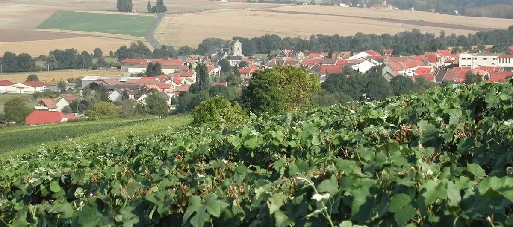

Trail de
Chaumuzy
Le dimanche 4 avril 2027, vivez une expérience trail unique au cœur du vignoble champenois. Entre forêts, coteaux viticoles et villages de caractère, le Trail de Chaumuzy vous invite à découvrir la Montagne de Reims autrement.
Deux parcours. Quatre villages. Une seule expérience.
Départ dans
Une nouvelle course
en Champagne
Le 4 avril 2027, la Montagne de Reims accueille sa nouvelle épreuve nature. Pour cette première édition, le Trail de Chaumuzy traverse quatre communes du vignoble : Chaumuzy, village‑départ au pied des coteaux, Belval‑sous‑Châtillon et ses vignes, La Neuville‑aux‑Larris en lisière de forêt, et Champlat‑et‑Boujacourt, entre champs et vignes.
Une course chronométrée avec classement, au cœur du Parc naturel régional de la Montagne de Reims, à moins de 30 minutes de Reims et d'Épernay.

Deux parcours,
une même aventure
Trail Expérience - 23 km
Un tracé plus exigeant pour les traileurs confirmés souhaitant profiter pleinement des reliefs, des panoramas et des chemins emblématiques de la Montagne de Reims. Plus de distance, plus de dénivelé, plus d'immersion.
Programme 2027
Tarifs et inscription
Associez votre marque
à l'événement
Une 1re édition, 500 coureurs et 4 communes du vignoble champenois : une visibilité locale forte pour votre entreprise. Idéal pour associer votre marque à un événement sportif éco-responsable en Champagne, fédérer vos équipes ou soutenir le sport de territoire.
Trois niveaux d'engagement, à votre image.
- Naming « présenté par »
- Logo dominant sur tous supports
- Arche d'arrivée + dossards
- 10 dossards offerts
- Prise de parole podium
- Logo sur banderoles et site
- Stand sur le village course
- 5 dossards offerts
- Mention réseaux sociaux
Tout savoir avant le départ
Les inscriptions sont ouvertes, exclusivement en ligne sur la plateforme Miles Republic, dans la limite de 500 dossards : 200 sur le 23 km et 300 sur le 15 km. Aucune inscription n'est prise sur place. Votre inscription est validée après paiement, acceptation du règlement sportif et envoi de votre licence ou PPS. Une réduction de 2 € est offerte pour les licencié(e)s FFA.
Le règlement sportif 2027 (mise à jour du 28 octobre 2026) est consultable et téléchargeable en PDF. Son acceptation est obligatoire lors de l'inscription sur Miles Republic, par case à cocher valant signature. Télécharger le règlement (PDF)
Au choix : une licence FFA Athlé Compétition, Athlé Running ou Athlé Entreprise en cours de validité (les licences Santé, Encadrement et Découverte ne sont pas acceptées), ou une attestation Pass Prévention Santé (PPS) délivrée par la FFA sur pps.athle.fr, datée de moins d'un an. Les licences d'autres fédérations ne sont acceptées que si elles figurent sur la liste des partenariats reconnus par la FFA. Les licences étrangères ne le sont pas : les coureurs étrangers doivent fournir un PPS. Le document est demandé à l'inscription, et au plus tard au retrait du dossard. Coureurs mineurs (15 km) : une autorisation parentale signée est également demandée.
Au Foyer Rural de Chaumuzy (33 rue du Capitaine Chesnais), le dimanche 4 avril 2027 de 7h00 à 9h00 pour le 23 km et de 7h00 à 10h00 pour le 15 km, sur présentation d'une pièce d'identité et de votre licence ou PPS, ainsi que de l'autorisation parentale pour les mineurs. Aucun dossard n'est délivré après ces horaires ni envoyé par courrier. Le retrait par un tiers est possible avec une procuration et les pièces du participant. Le dossard se porte visible sur le devant, ceinture porte-dossard acceptée, sans être plié ni masqué.
Un parking gratuit est fléché à proximité de la zone départ et arrivée, à Chaumuzy. Nous vous recommandons le covoiturage : l'accès au village est limité le matin de l'épreuve. Chaumuzy se situe au cœur de la Montagne de Reims, à environ 30 minutes de Reims et d'Épernay.
Un point de ravitaillement sur chaque parcours, à La Neuville‑aux‑Larris (Place du Général de Gaulle) : eau, boissons énergétiques, fruits secs et fruits frais. Un ravitaillement complet vous attend à l'arrivée, au Foyer Rural de Chaumuzy. Chacun remplit lui-même son contenant : aucun gobelet jetable n'est fourni. Les déchets se jettent uniquement dans les zones de propreté, de 20 m avant à 100 m après le ravitaillement.
Oui, les épreuves se courent en semi-autonomie. Sont obligatoires sur les deux parcours : couverture de survie, réserve d'eau d'au moins 0,5 L, téléphone mobile chargé avec le numéro du PC course enregistré et le son activé, sifflet, gobelet ou contenant réutilisable personnel, et dossard visible sur le devant. Chaque élément manquant entraîne une pénalité de 5 minutes. Conseillés : réserve alimentaire, veste coupe-vent, casquette ou gants selon la météo, petite trousse de premiers soins. Les bâtons sont autorisés, à conserver du départ à l'arrivée. Les écouteurs sont tolérés si vous restez audible des consignes.
Oui, selon les catégories d'âge FFA appliquées au kilomètre-effort. Le Trail 23 km (27,1 km-effort) est réservé aux Espoirs (U23) et au-delà, soit les coureurs nés en 2007 et avant. Le Trail 15 km (17,7 km-effort) est ouvert aux Juniors (U20) et au-delà, soit les coureurs nés en 2009 et avant. La catégorie est contrôlée à l'inscription et au retrait du dossard : toute inscription non conforme est refusée, sans remboursement.
Oui : 3h30 de course sur le 23 km et 2h30 sur le 15 km. Au-delà, le concurrent est mis hors course : il suit les consignes des serre-files et remet son dossard et sa puce. Tout abandon doit être signalé au plus tôt à un membre de l'organisation.
Oui, par puce électronique, avec un classement pour chaque épreuve. Les résultats officiels sont publiés en ligne à l'issue de la course. Les réclamations se font par écrit auprès du directeur de course, dans les 30 minutes suivant l'affichage des résultats. Sont récompensés, sans cumul, les trois premiers hommes et les trois premières femmes au scratch de chaque épreuve, ainsi que le premier et la première de chaque catégorie d'âge. Les distances n'étant pas officielles au sens FFA, elles ne permettent ni record ni points au classement des clubs.
En début de printemps, la météo peut être changeante : pluie, vent, sols glissants. En cas de force majeure ou de danger pour les coureurs, l'organisation peut basculer sur un parcours de repli, modifier les horaires ou les barrières horaires, neutraliser une portion, reporter ou annuler l'épreuve. Aucun remboursement ne peut alors être exigé ; selon les circonstances, un report, un avoir ou un remboursement partiel pourra être proposé.
Non. Pour des raisons de sécurité, les suiveurs, accompagnants à vélo, poussettes et animaux, même tenus en laisse, sont interdits sur les parcours. Les ravitaillements organisés par des proches en dehors des zones prévues sont interdits et passibles de mise hors course. Vos supporters sont les bienvenus sur la zone départ et arrivée.
Un dispositif de secours adapté à 500 coureurs : secouristes d'une association agréée, médecin de course, ambulance et défibrillateur au Foyer Rural de Chaumuzy, avec une prise en charge possible en tout point du parcours en moins de 30 minutes. Des signaleurs sécurisent les traversées de routes, une équipe de tête et des serre-files ferment le parcours. Chaque coureur s'engage à porter assistance à un concurrent en difficulté jusqu'à l'arrivée des secours. Le trail sollicite fortement le cœur : ne prenez pas le départ en cas de fièvre ou d'état grippal et signalez sans délai tout malaise ou douleur thoracique.
Oui. Aucun gobelet jetable sur les ravitaillements, produits locaux et de saison, balisage retiré après l'épreuve. Les coureurs restent sur les sentiers balisés, sans couper les virages, et respectent les vignes, les cultures et la faune. Il est interdit de fumer sur les parcours (risque incendie). Le covoiturage est encouragé. L'organisation suit une démarche RSE inspirée de la norme ISO 20121.
L'engagement est personnel, ferme et définitif : l'inscription ne bénéficie d'aucun droit de rétractation (article L.221-28 du Code de la consommation) et n'ouvre droit à aucun remboursement de la part de l'organisateur. En revanche, si vous ne pouvez plus participer, vous pouvez céder votre dossard via la plateforme Miles Republic : c'est la seule voie autorisée. Tout échange en dehors de la plateforme expose le porteur et le titulaire initial à la mise hors course. Pour vous protéger, souscrivez l'assurance annulation BEticketing Sans Justificatif d'Assur Connect, proposée lors de l'inscription sur Miles Republic : elle rembourse les droits d'inscription dans les conditions de l'assureur. La demande se fait en ligne au plus tard à la fin du deuxième jour suivant l'épreuve.
L'organisation a souscrit une assurance responsabilité civile couvrant les participants pendant l'épreuve. Pour les dommages corporels, les licenciés FFA bénéficient des garanties de leur licence. Pour les non-licenciés, l'organisation recommande l'assurance individuelle accident BEsafe d'Assur Connect, proposée lors de l'inscription : frais médicaux, frais de recherche et de secours, assistance rapatriement. Chaque coureur reste responsable de ses effets personnels.
Oui. Le Pack entreprise (50 € / dossard) permet d'engager une équipe avec inscription centralisée, facture unique et visibilité de votre marque. Réserver un rendez-vous de 15 min
Prêt à prendre le départ ?
Je m'inscris